Aktuální nabídka
Nemovitosti, které nabízím
15 volných nabídek, k tomu 7 v rezervaci a 1 prodaná. Rezervované a prodané nemovitosti jsou na konci výpisu. Vyberte typ, nebo napište lokalitu.
23 z 23
 Prodej · Byt
2 350 000 KčProdej bytu 3+1 v osobním vlastnictví 64 m², Podbořany
Letov, Podbořany
3+164 m²1. podlaží
Prodej · Byt
2 350 000 KčProdej bytu 3+1 v osobním vlastnictví 64 m², Podbořany
Letov, Podbořany
3+164 m²1. podlaží
 Prodej · BytVideo
3 100 000 KčProdej bytu 3+1 v družstevním vlastnictví 81 m², Klášterec nad Ohří
Klášterec nad Ohří
3+181 m²2. podlaží
Prodej · BytVideo
3 100 000 KčProdej bytu 3+1 v družstevním vlastnictví 81 m², Klášterec nad Ohří
Klášterec nad Ohří
3+181 m²2. podlaží
 Prodej · BytVideo
2 950 000 KčProdej bytu 3+1 v osobním vlastnictví 69 m², Most
Most
3+169 m²1. podlaží
Prodej · BytVideo
2 950 000 KčProdej bytu 3+1 v osobním vlastnictví 69 m², Most
Most
3+169 m²1. podlaží
 Prodej · DůmVideo
5 900 000 KčProdej domu 136 m², Kryry
Kryry
136 m²
Prodej · DůmVideo
5 900 000 KčProdej domu 136 m², Kryry
Kryry
136 m²
 Prodej · Pozemek
500 000 KčProdej pozemku 7734 m², Holedeč
Veletice, Holedeč
7734 m²
Prodej · Pozemek
500 000 KčProdej pozemku 7734 m², Holedeč
Veletice, Holedeč
7734 m²
 Prodej · Pozemek
2 200 000 KčProdej pozemku 12056 m², Holedeč
Veletice, Holedeč
12056 m²
Prodej · Pozemek
2 200 000 KčProdej pozemku 12056 m², Holedeč
Veletice, Holedeč
12056 m²
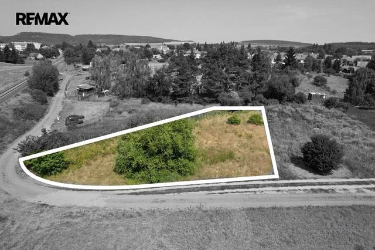
Prodej · PozemekVideo 900 000 KčProdej pozemku 1181 m², Vroutek Vroutek 1181 m² Prodej · PozemekVideo
1 300 000 KčProdej pozemku 1268 m², Vroutek
Vroutek
1268 m²
Prodej · PozemekVideo
1 300 000 KčProdej pozemku 1268 m², Vroutek
Vroutek
1268 m²
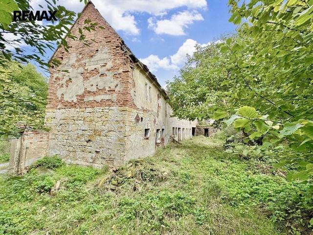
Prodej · Pozemek 1 100 000 KčProdej pozemku 889 m², Holedeč Stránky, Holedeč 889 m²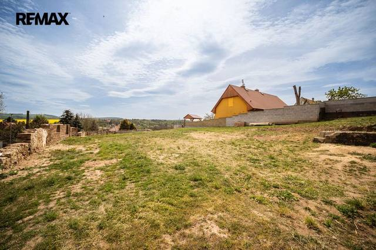
Prodej · PozemekVideo 1 900 000 KčProdej pozemku 820 m², Holedeč Veletice, Holedeč 820 m²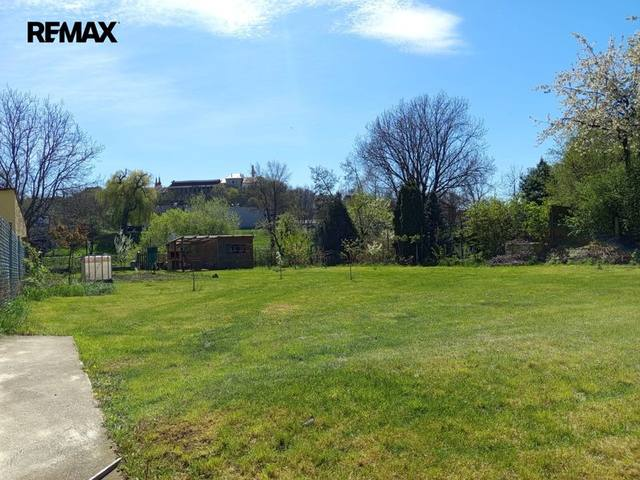
Prodej · PozemekVideo 2 700 000 KčProdej pozemku 741 m², Žatec Žatec 741 m²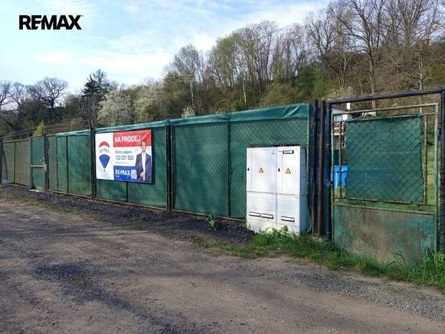
Prodej · Pozemek 900 000 KčProdej pozemku 607 m², Žatec Žatec 607 m²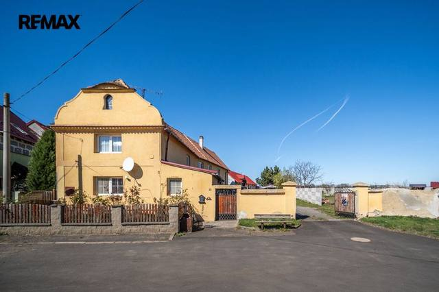
Prodej · DůmVideo 6 750 000 KčProdej domu 152 m², Žatec Bezděkov, Žatec 152 m²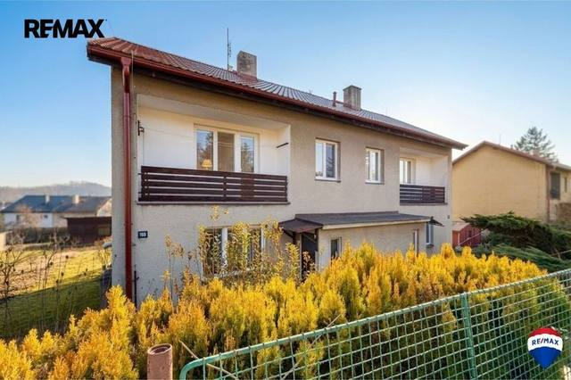
Prodej · DůmVideo 4 650 000 KčProdej domu 78 m², Měcholupy Měcholupy 78 m²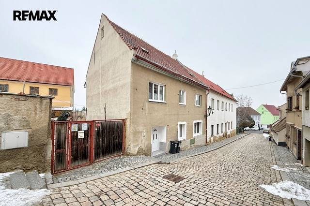
Prodej · DůmVideo 7 640 000 KčProdej domu 120 m², Žatec Žatec 120 m²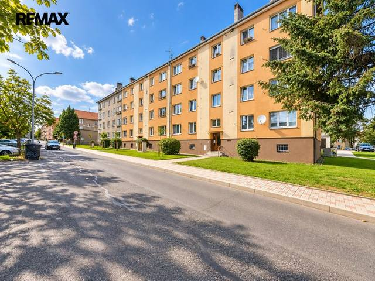
Prodej · BytRezervace 2 500 000 KčProdej bytu 2+1 v osobním vlastnictví 49 m², Podbořany Podbořany 2+149 m²3. podlaží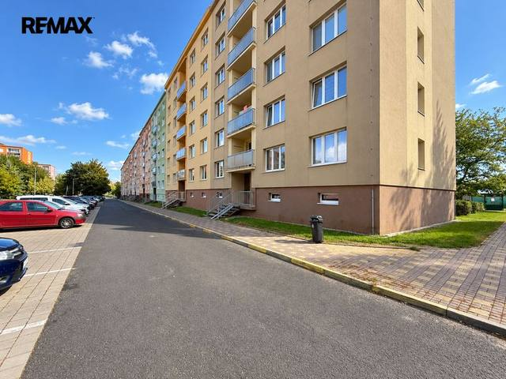
Prodej · BytRezervace 2 400 000 KčProdej bytu 2+1 v osobním vlastnictví 57 m², Podbořany Podbořany 2+157 m²1. podlaží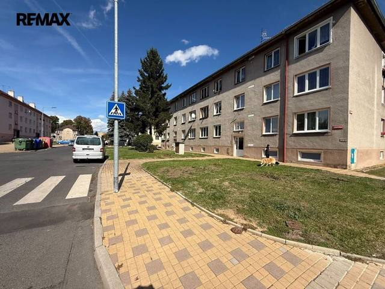
Prodej · BytRezervace 1 750 000 KčProdej bytu 2+1 v osobním vlastnictví 50 m², Podbořany Podbořany 2+150 m²3. podlaží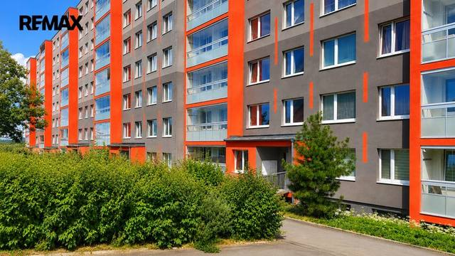
Prodej · BytRezervace 2 900 000 KčProdej bytu 3+1 v osobním vlastnictví 68 m², Most Most 3+168 m²2. podlaží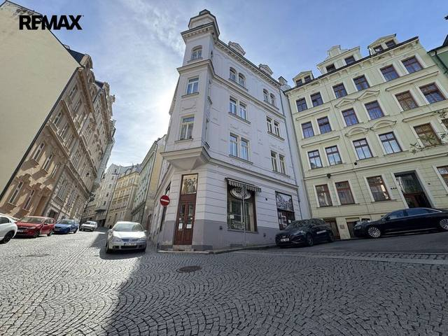
Prodej · BytRezervace 2 200 000 KčProdej bytu atypický v osobním vlastnictví 14 m², Karlovy Vary Karlovy Vary 14 m²5. podlaží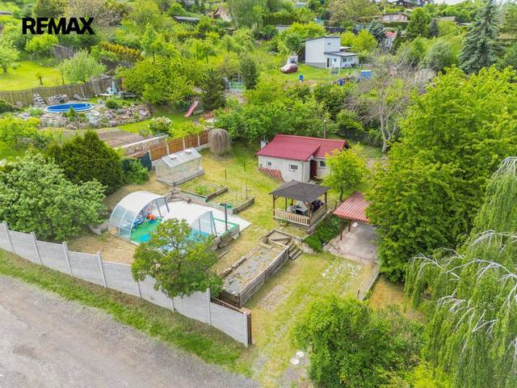
Prodej · PozemekRezervaceVideo 2 400 000 KčProdej pozemku 612 m², Žatec Žatec 612 m²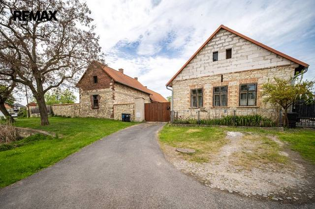
Prodej · DůmRezervaceVideo 4 260 000 KčProdej domu 142 m², Lipno Drahomyšl, Lipno 142 m²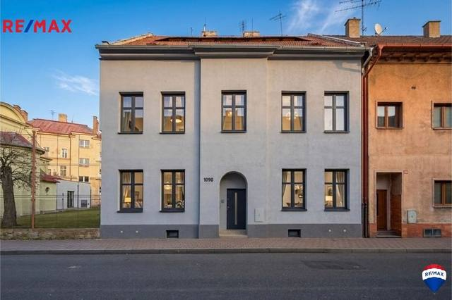
Prodej · DůmProdánoVideo ProdánoProdej domu 175 m², Žatec Žatec 175 m²Tomuto výběru zatím neodpovídá žádná nabídka. Napište mi, co hledáte.